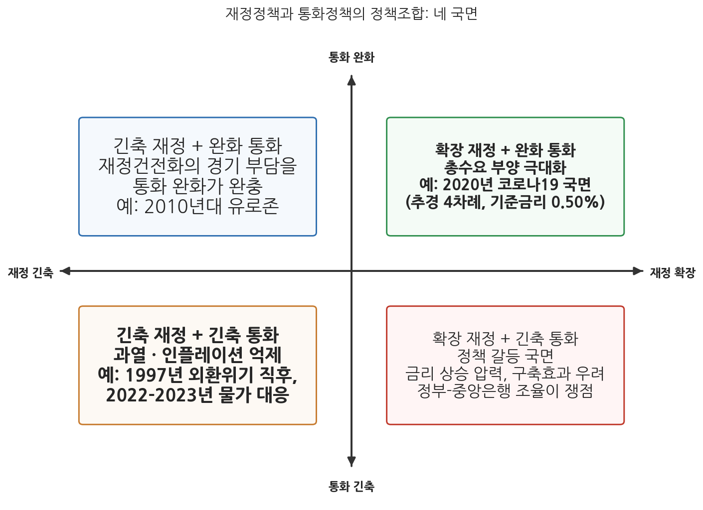
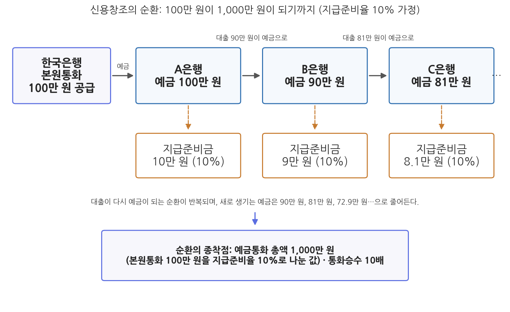

9주차 2차시. 재정정책과 통화정책
최종 수정: 2026-08-13 · 이 교재는 학기 중에도 계속 업데이트됩니다
인플레이션은 언제나 그리고 어디에서나 화폐적 현상이다. (밀턴 프리드먼, 「인플레이션: 원인과 결과」, 1963)
이 장에서 배우는 것
2025년 7월 4일, 국회는 31조 8,000억 원 규모의 2025년 2차 추가경정예산(추경)을 확정했다. 전 국민에게 민생회복 소비쿠폰을 지급하는 것이 핵심이었다. 여기서 소박한 질문을 던져 보자. 이 31조 8,000억 원은 어디서 왔는가. 세금만으로는 부족해 상당 부분을 국채 발행으로 조달했다면, 그 국채는 누가 샀는가. 은행이 샀다면 은행의 그 돈은 어디서 생겼는가. 그리고 정부가 쿠폰으로 뿌린 돈이 시중에 풀리면 물가는, 금리는 어떻게 되는가. 질문을 몇 번만 이어 가면 우리는 예산서의 세계를 벗어나 은행과 중앙은행의 세계, 곧 통화의 세계에 들어서게 된다.
재정정책을 제대로 이해하려면 통화정책을 이해해야 한다. 정부의 조세와 지출은 그 자체가 시중 통화량을 움직이고, 국채는 은행의 자산이자 중앙은행의 정책 수단이 되며, 재정 확장의 효과는 중앙은행이 금리로 어떻게 반응하는가에 따라 달라진다. 7주차에서 확장적 재정정책의 논리를, 앞 차시에서 그 확장을 묶으려는 재정준칙을 보았다면, 이번 차시는 재정정책의 짝인 통화정책과 그 무대인 금융시스템을 들여다본다. 마지막에는 이 모든 논의를 뒤흔드는 도전자, 곧 "통화를 발행하는 정부에게 재정적자는 제약이 아니다"라고 주장하는 현대화폐이론(MMT)을 다룬다. 구체적으로 다음을 배운다.
- 재정정책과 통화정책의 비교, 그리고 두 정책의 조합(정책조합)이 만드는 네 국면
- 한국은행의 물가안정목표제와 중앙은행 독립성의 논리
- 은행의 예금-대출 순환이 통화를 만들어 내는 신용창조의 원리 (수식 없이 산수로)
- 통화의 종류와 통화지표의 사다리: M1, M2, Lf, L
- 현대화폐이론(MMT)의 핵심 주장과 이에 대한 비판
이 장은 하나의 질문을 따라 전개된다. "정부가 쓰는 돈과 중앙은행이 다루는 돈은 어떻게 연결되어 있는가?"
2.1 재정정책과 통화정책의 관계와 정책조합의 네 국면을 정리한다 → 2.2 금융시스템의 구조와 신용창조의 원리를 예금-대출 순환으로 뜯어본다 → 2.3 통화의 종류와 통화지표(M1 · M2 · Lf · L)를 사다리로 세운다 → 2.4 현대화폐이론(MMT)의 주장과 비판을 검토하고, 재정과정(10주차)을 예고한다.
2.1 재정정책과 통화정책의 관계
거시경제정책의 두 손
한 나라의 거시경제를 움직이는 정책 수단은 크게 둘이다. 재정정책(fiscal policy)은 정부가 조세와 지출을 통해 총수요와 자원배분에 영향을 미치는 정책이고, 통화정책(monetary policy)은 독점적 발권력을 가진 중앙은행이 통화량이나 금리에 영향을 미쳐 물가안정과 금융안정을 달성함으로써 경제의 지속가능한 성장을 뒷받침하는 정책이다. 두 정책은 주체도, 수단도, 결정 방식도 다르다. 표 9-2가 이를 비교한다.
표 9-2. 재정정책과 통화정책의 비교
| 구분 | 재정정책 | 통화정책 |
|---|---|---|
| 결정 주체 | 정부(기획예산처의 예산 편성, 재정경제부의 세제)와 국회(심의·의결) | 중앙은행(한국은행 금융통화위원회) |
| 주요 수단 | 정부지출, 조세, 국채 발행 | 기준금리, 공개시장운영, 지급준비율, 여수신제도 |
| 일차 목표 | 자원배분, 소득재분배, 경제안정화(2주차) | 물가안정, 금융안정 |
| 결정의 성격 | 정치적 과정(예산주기, 입법) | 전문가 합의제(연 8회 통화정책방향 회의) |
| 시차의 특징 | 결정까지 오래 걸리고(내부시차 김) 효과는 비교적 빠름 | 결정은 빠르나(내부시차 짧음) 효과 파급에 시간이 걸림 |
이 표에서 눈여겨볼 것은 결정의 성격 차이다. 재정정책은 예산과 세법이라는 형식을 거치므로 국회의 심의를 받는 민주적·정치적 과정이지만, 그만큼 결정이 느리고 경직적이다. 통화정책은 금융통화위원회가 연 8회 회의에서 기준금리를 조정하는 방식이어서 기민하지만, 선출되지 않은 전문가들의 결정이라는 점에서 민주적 정당성의 질문이 따라붙는다. 이 차이가 바로 다음에 볼 중앙은행 독립성 논쟁의 뿌리다.
통화정책(monetary policy)은 독점적 발권력을 지닌 중앙은행이 통화량이나 금리에 영향을 미쳐 물가안정, 금융안정 등을 달성함으로써 경제가 지속가능한 성장을 이룰 수 있도록 하는 정책이다. 한국은행의 대표 수단은 기준금리(7일물 환매조건부증권 매매에 적용하는 정책금리)이며, 이외에 국공채를 사고팔아 유동성을 조절하는 공개시장운영, 은행이 예금의 일정 비율을 의무적으로 예치하게 하는 지급준비제도, 금융기관에 대한 대출·예금 제도인 여수신제도가 있다. 위기 시 중앙은행이 국채 등 자산을 대규모로 사들여 돈을 푸는 양적완화(quantitative easing)는 금리가 0% 부근에 닿아 더 내릴 수 없을 때 쓰는 비전통적 수단이다.
한국은행과 물가안정목표제
한국의 통화정책 목표는 법에 적혀 있다. 직접 읽어 보자.
"① 이 법은 한국은행을 설립하고 효율적인 통화신용정책의 수립과 집행을 통하여 물가안정을 도모함으로써 국민경제의 건전한 발전에 이바지함을 목적으로 한다.
② 한국은행은 통화신용정책을 수행할 때에는 금융안정에 유의하여야 한다."
무슨 뜻인가. 제1항은 한국은행의 최우선 목표가 물가안정임을 선언한다. 성장도 고용도 아닌 물가를 앞세운 것은 1997년 말 한국은행법 개정의 산물로, 한국은행은 1998년부터 물가안정목표제(inflation targeting)를 운영해 왔다. 그 이전에는 통화량 자체에 목표를 두고 지급준비금 총액을 통제하는 통화량 목표제를 활용했으나, 금융시장이 발전하면서 통화량과 물가의 관계가 느슨해지자 목표를 통화량이라는 중간 지표에서 물가라는 최종 지표로 옮긴 것이다. 목표 대상 지표는 변천을 겪었다. 도입 초기에는 소비자물가지수(CPI) 상승률을 쓰다가 2000년부터 일시적 외부 충격에 따른 변동분을 걷어낸 근원 인플레이션율을 활용했고, 2007년부터는 다시 국민 체감에 가까운 소비자물가지수 상승률로 돌아왔다. 2016년부터 목표 수치는 2%로 단일화되었으며, 과거에는 3년 단위로 목표를 다시 정했으나 2019년부터는 적용 기간을 따로 정하지 않은 채 2% 목표를 유지하며 주기적으로 점검하는 방식으로 바뀌었다. 제2항은 2011년 개정으로 추가된 조항으로, 2008년 글로벌 금융위기 이후 물가만 안정되면 충분하지 않고 금융시스템의 안정도 중앙은행이 살펴야 한다는 반성을 반영해 금융안정을 부가적 목표로 명시한 것이다.
한국은행법 제3조는 "한국은행의 통화신용정책은 중립적으로 수립되고 자율적으로 집행되도록 하여야 하며, 한국은행의 자주성은 존중되어야 한다"고 규정한다. 발권력을 정부에서 떼어 놓는 논리는 앞 차시에서 본 재정준칙의 논리와 같은 뿌리, 곧 시간 비일관성에 있다. 정부는 언제나 눈앞의 경기 부양을 원한다. 통화정책이 정부 손에 있으면 선거 앞 금리 인하와 발권 유혹을 이기기 어렵고, 민간이 이를 예상하는 순간 물가 기대는 풀려 버린다. 화폐 발행으로 재정을 메우는 이른바 재정의 화폐화(monetization)가 초인플레이션으로 이어진 역사적 경험(1920년대 독일, 최근의 베네수엘라 등)이 그 극단적 증거다. 그래서 각국은 정부가 손대기 어려운 독립 기구에 발권력을 맡기고, 법으로 목표(물가안정)를 못박아 두는 길을 택했다. 재정준칙이 재정의 손을 묶는 장치라면, 중앙은행 독립성은 통화의 손을 묶는 장치다. 두 장치 모두 "미래의 유혹으로부터 현재의 약속을 지키는" 자기구속의 제도라는 점에서 닮은꼴이다.
정책조합: 두 손이 만드는 네 국면
두 정책은 각자 움직이지만 경제는 그 합을 받는다. 재정과 통화가 각각 확장과 긴축 중 어느 방향을 취하는가에 따라 네 가지 조합, 곧 정책조합(policy mix)이 만들어진다. 그림 9-2가 이를 보여 준다.

그림 9-2를 읽는 법은 이렇다. 가로축은 재정정책의 방향(왼쪽 긴축, 오른쪽 확장)이고 세로축은 통화정책의 방향(아래 긴축, 위 완화)이다. 오른쪽 위(확장+완화)는 두 손이 함께 미는 조합으로 총수요 부양 효과가 가장 크고, 왼쪽 아래(긴축+긴축)는 두 손이 함께 죄는 조합으로 과열과 인플레이션을 잡을 때 쓰인다. 대각선의 두 칸은 두 손이 반대로 움직이는 조합이다. 이 그림에서 알 수 있는 것은, 같은 재정 확장이라도 통화정책이 어느 칸에 있는가에 따라 효과가 달라진다는 점이다. 확장재정에 완화통화가 결합하면 금리가 눌려 있어 재정지출의 효과가 온전히 살지만, 긴축통화와 결합하면 재정이 풀고 통화가 죄는 힘겨루기 속에 금리 상승 압력이 커지고, 7주차에서 본 구축효과(정부지출 확대가 금리를 올려 민간투자를 밀어내는 효과)가 커질 수 있다.
한국 현대사는 네 칸을 모두 지나왔다. 1997년 외환위기 직후에는 IMF 프로그램에 따라 고금리와 재정긴축이 결합된 긴축+긴축 국면을 겪었고(이 조합이 침체를 깊게 했다는 비판이 곧 제기되어 1998년 중반부터 재정은 확장으로 돌아섰다), 2020년 코로나19 국면에서는 네 차례의 추경과 사상 최저인 0.50%까지의 기준금리 인하가 결합된 전형적인 확장+완화 국면이 펼쳐졌다. 반대로 2022-2023년에는 물가 급등(소비자물가 상승률은 2022년 7월 6.3%로 정점)에 대응해 한국은행이 기준금리를 3.50%까지 끌어올리는 동안 정부 재정도 건전화를 내세워 긴축+긴축의 방향에 섰다. 그리고 앞 차시에서 본 것처럼 2025년 이후에는 확장재정으로의 전환이 선언되었다. 재정과 통화가 서로 다른 방향을 보는 국면에서는 두 당국 간의 정책 조율, 곧 정부와 중앙은행의 관계가 첨예한 쟁점이 된다.
2.2 금융시스템과 신용창조
돈이 도는 무대: 금융시스템의 네 주체
정책조합의 효과가 전달되는 무대가 금융시스템이다. 등장인물은 넷이다. 첫째, 가계는 예금, 보험, 채권·주식 투자를 통해 자금을 공급하는 순저축 주체이고, 기업은 생산·투자 활동을 위해 자금을 차입하는 순수요 주체다. 금융시장은 이 자금의 남는 곳과 모자라는 곳을 매개한다. 둘째, 민간은행은 가계·기업의 예금을 받아 대출을 제공하면서 예금통화를 창출하는 핵심 주체로, 지급결제·신용중개·유동성 공급 기능을 수행한다. 셋째, 정부는 조세와 지출로 금융시스템에 영향을 미치고 국채 발행으로 자금을 조달한다. 정부가 발행한 국채는 민간은행의 중요한 안전자산이자 중앙은행 공개시장운영의 수단이 된다. 넷째, 한국은행(중앙은행)은 최종적 통화 발행기관으로서 기준금리 운영, 공개시장운영, 지급준비율 조정을 통해 유동성을 관리한다. 은행의 은행이자 정부의 은행이기도 하다. 정부의 국고금이 한국은행에 예치되어 있다는 사실은 잠시 뒤 재정과 통화의 연결을 볼 때 중요해진다.
은행이 돈을 만든다: 신용창조의 산수
이 무대에서 가장 신기한 일은 은행이 돈을 만들어 낸다는 것이다. 통화 공급 과정의 핵심인 신용창조 메커니즘을 산수로 따라가 보자. 지급준비율이 10%이고, 사람들이 현금을 따로 쥐고 있지 않고 받은 돈을 모두 은행에 예금한다고 가정한다.
한국은행이 공급한 100만 원이 갑의 손을 거쳐 A은행에 예금되었다고 하자. A은행은 이 중 10%인 10만 원만 지급준비금으로 남기고, 나머지 90만 원을 을에게 대출한다. 을이 이 돈을 거래처인 병에게 지급하면 병은 그 90만 원을 B은행에 예금한다. 이 순간 경제 전체의 예금은 190만 원이 되었다. 갑의 통장에 100만 원이 그대로 있는데 병의 통장에 90만 원이 새로 생겼기 때문이다. B은행은 다시 9만 원을 남기고 81만 원을 대출하고, 그 돈은 C은행에 예금되어 예금 총액은 271만 원이 된다. 이 순환이 반복되면 새로 생기는 예금은 90만 원, 81만 원, 72만 9,000원으로 점점 작아지면서 어딘가로 수렴한다. 어디일까. 각 단계에서 예금의 10%가 지급준비금으로 빠져나가므로, 순환은 처음의 100만 원이 전부 지급준비금으로 잠길 때까지 계속된다. 100만 원이 10%씩 잠기려면 예금 총액은 1,000만 원이 되어야 한다. 즉 본원통화 100만 원이 예금통화 1,000만 원을 만들어 낸 것이다. 처음 돈의 10배가 되었다는 뜻에서 이때의 배율 10을 통화승수라고 부른다. 그림 9-3이 이 순환을 보여 준다.

그림 9-3을 읽는 법은 이렇다. 왼쪽 위에서 출발한 본원통화 100만 원이 예금과 대출의 순환 고리를 따라 오른쪽으로 흐르며, 각 은행에서 10%씩 지급준비금으로 빠지고 나머지가 다음 예금이 된다. 아래 상자는 이 순환의 종착점, 곧 예금통화 총액 1,000만 원(100만 원 ÷ 지급준비율 10%)이다. 이 그림에서 알 수 있는 것은 두 가지다. 첫째, 통화의 대부분은 조폐공사가 찍은 지폐가 아니라 은행의 대출 과정에서 창출된 예금이다. 둘째, 지급준비율이 유동성 조절의 핵심 수단인 이유가 보인다. 지급준비율이 높아지면 각 단계에서 잠기는 몫이 커져 같은 본원통화로 만들어지는 통화량이 줄어든다.
본원통화(monetary base)는 중앙은행 창구를 통해 공급되는, 통화량의 원천이 되는 통화로, 민간이 보유한 현금과 은행이 중앙은행에 맡긴 지급준비금의 합이다. 지급준비금(reserves)은 은행이 예금의 일정 비율(지급준비율)만큼 중앙은행에 의무적으로 보유하는 자금으로, 은행 간 결제와 통화정책 집행의 기초가 된다. 신용창조(credit creation)는 은행이 예금과 대출 업무를 반복하는 과정에서 본원통화의 몇 배에 이르는 예금통화를 만들어 내는 현상을 말한다.
방금의 이야기는 예금이 먼저 들어오고 은행이 그 일부를 대출하는 순서였다. 그런데 현대 중앙은행들은 실제 순서가 반대에 가깝다고 설명한다. 영란은행(영국 중앙은행)은 2014년 공식 보고서 「현대 경제에서의 화폐 창조」에서, 은행은 들어온 예금을 빌려주는 것이 아니라 대출을 실행하는 순간 차입자의 계좌에 예금을 새로 기입함으로써 통화를 창조하며, 지급준비금은 대출 뒤에 필요한 만큼 조달한다고 밝혔다(McLeay, Radia & Thomas, 2014). 이 관점에서 통화량을 제약하는 것은 지급준비율이라는 기계적 상한이 아니라, 수익성 있는 대출 수요와 은행의 위험 관리, 그리고 중앙은행이 정한 금리 수준이다. 교과서의 통화승수 모형은 신용창조의 논리를 보여 주는 유용한 사고 실험이지만, 중앙은행이 본원통화라는 손잡이로 통화량을 기계적으로 조종한다는 인상은 실제와 다르다는 것이다. 이 내생화폐의 관점은 2.4절에서 볼 MMT가 딛고 선 발판이기도 하다.
재정활동은 통화량을 움직인다
이제 이 장 도입의 질문으로 돌아갈 준비가 되었다. 정부의 국고금은 한국은행에 예치되어 있다. 그래서 정부의 수입과 지출은 그 자체로 본원통화를 움직인다. 정부가 세금 100만 원을 걷으면 무슨 일이 일어나는지 따라가 보자. 납세자의 은행 예금이 100만 원 줄고, 그 은행은 한국은행에 있는 정부예금 계좌로 100만 원을 이체한다. 이때 은행의 지급준비금이 100만 원 줄어든다. 지급준비금은 본원통화의 일부이므로, 본원통화가 줄고 신용창조의 순환을 거쳐 통화량은 그 몇 배로 줄어든다. 정부 지출은 정확히 반대다. 정부예금이 민간 계좌로 이체되면 은행의 지급준비금이 늘어 본원통화와 통화량이 늘어난다. 요컨대 정부예금 잔고의 증가는 통화량 감소로, 감소는 통화량 증가로 이어진다. 세금을 걷어 두기만 하는 정부는 시중의 돈을 빨아들이고 있는 것이며, 재정지출은 그 자체가 시중에 돈을 푸는 행위다. 재정정책이 통화정책과 분리될 수 없는 이유가 장부의 수준에서 확인되는 셈이다.
2.3 통화의 종류와 통화지표
현금만 돈이 아니다
앞 절이 보여 주듯 경제에서 돈 노릇을 하는 것은 현금만이 아니다. 통화의 종류를 정리해 보자. 현금통화는 유통 중인 지폐와 주화다. 예금통화는 은행이 대출을 통해 창출하는 통화로, 가계·기업이 보유한 요구불예금이 대표적이다. 체크카드 결제와 계좌이체가 일상이 된 오늘날 실질적 결제수단은 오히려 예금이며, "은행예금이 곧 통화"라는 점이 현대 통화체계의 중심이다. 지급준비금은 은행이 중앙은행에 보관하는 예금으로 민간이 쓰는 돈은 아니지만, 은행 간 결제와 통화정책 집행의 기초가 된다. 문제는 예금이라고 다 같은 예금이 아니라는 데 있다. 언제든 빼 쓸 수 있는 보통예금과 2년간 묶인 정기예금은 돈에 가까운 정도, 곧 유동성이 다르다. 그래서 통화를 세는 지표는 하나가 아니라 유동성의 사다리를 따라 여러 개다.
지표의 사다리: M1에서 L까지
한국은행은 유동성이 높은 것부터 차례로 포괄 범위를 넓혀 가며 네 개의 지표를 편제한다. 표 9-3이 그 사다리다.
표 9-3. 통화지표의 사다리 (한국은행 편제 기준)
| 지표 | 구성 | 의미와 특징 |
|---|---|---|
| M1(협의통화) | 현금통화 + 요구불예금 + 수시입출식 저축성예금 | 즉시 결제에 쓸 수 있는 가장 유동성 높은 통화. 단기 유동성 지표 |
| M2(광의통화) | M1 + 만기 2년 미만의 정기예·적금, 시장형 상품(양도성예금증서 등), 실적배당형 상품 등 | 약간의 이자 손실만 감수하면 현금화할 수 있는 금융자산까지 포함. 한국은행이 가장 중시하는 대표적 통화량 지표 |
| Lf(금융기관유동성) | M2 + 만기 2년 이상 정기예·적금 및 금융채, 생명보험 계약준비금 등 | 금융기관이 공급하는 유동성 전체 |
| L(광의유동성) | Lf + 국채, 지방채, 회사채, 기업어음 등 | 정부·기업 발행 유동성 상품까지 포함한 가장 넓은 지표. 금융시장의 구조적 변화를 파악할 때 유용 |
사다리를 오를수록 "돈"의 범위는 넓어지고 유동성은 낮아진다. 한국의 실제 규모를 보면, 2026년 4월 평균잔액 기준 M2는 4,153조 9,000억 원으로 전년 같은 달보다 5.7% 늘었다(한국은행 통화 및 유동성 통계). 앞 차시에서 본 2026년 본예산 총지출 727조 9,000억 원과 견주면, 시중의 광의통화가 한 해 나라 살림의 다섯 배를 넘는 규모로 돌고 있는 셈이다. 금융자산 구성이 비교적 단순한 한국에서는 M2가 총통화량의 대표 지표로 쓰이며, 통화정책과 금융시장 분석의 기준 지표 역할을 한다.
첫째, 지표마다 그림이 다르다. 금리가 오르면 사람들이 수시입출식 예금(M1)을 빼서 정기예금(M2)으로 옮기므로, 통화량 전체가 그대로여도 M1은 줄고 M2 증가율은 유지될 수 있다. 어느 지표를 보느냐에 따라 "돈이 줄었다"와 "돈이 늘었다"가 동시에 참일 수 있다는 뜻이다. 둘째, 평균잔액(평잔)과 월말 잔액(말잔), 원계열과 계절조정계열 등 집계 기준에 따라 수치가 달라지므로 기준을 확인해야 한다. 셋째, "통화량이 늘면 물가가 오른다"는 화폐수량설의 직관은 장기·평균의 경향이지 기계적 법칙이 아니다. 2010년대 주요국은 양적완화로 본원통화를 몇 배로 늘리고도 낮은 물가를 겪었다. 통화와 물가의 관계는 돈이 얼마나 도는가(유통속도), 경제의 유휴 자원이 얼마나 남았는가에 따라 달라진다.
2.4 현대화폐이론(MMT)의 주장과 비판
이단의 등장
이 장의 마지막 주인공은 지금까지의 논의 전체에 도전장을 내민 이론이다. 현대화폐이론(Modern Monetary Theory, MMT)은 포스트 케인스학파를 중심으로 발전한 거시경제 접근법으로, 레이(L. Randall Wray)의 이론화 작업과 켈턴(Stephanie Kelton)의 대중서 『적자의 본질(The Deficit Myth)』(2020)을 통해 알려졌다. 2010년대 미국에서 그린뉴딜과 일자리보장제 같은 대규모 지출 구상의 이론적 근거로 소환되면서 학계 밖에서도 뜨거운 논쟁거리가 되었고, 코로나19 이후 각국의 초대형 재정 지출은 이 이론에 대한 관심을 한층 키웠다.
현대화폐이론(Modern Monetary Theory, MMT)은 자국 통화를 발행하는 정부는 가계·기업과 달리 예산 제약에 묶이지 않으며, 재정지출의 진짜 제약은 세수나 국가채무가 아니라 인플레이션이라고 주장하는 거시경제 이론이다. 정부는 지급준비금을 늘리는 방식으로 지출할 수 있어 자국 통화 표시 채무로는 파산하지 않고, 재정적자는 그만큼 민간 부문의 순자산을 늘려 주므로 그 자체로 문제가 아니며, 조세의 기능은 재원 조달이 아니라 총수요(인플레이션)의 관리에 있다고 본다. 이를 근거로 완전고용 달성, 공공서비스 확대, 그린뉴딜 같은 확장적 재정정책을 정당화한다.
MMT의 주장이 순전한 공상은 아니라는 점부터 짚어 두자. 2.2절에서 본 것처럼 은행은 대출로 예금통화를 창조하고, 정부 지출은 그 자체로 시중에 돈을 공급한다. 통화를 발행하는 정부가 자국 통화 표시 채무를 갚지 못해 파산하는 일은 논리적으로 성립하기 어렵다는 것도 사실이다. MMT는 이런 화폐제도의 실제 작동에서 출발해, 통설이 당연시해 온 "정부도 가계처럼 번 만큼 써야 한다"는 전제를 뒤집는다. 주류경제학의 통념과 MMT의 반론을 맞세우면 표 9-4와 같다.
표 9-4. 주류경제학의 통념과 MMT의 반론
| 주류경제학의 통념 | MMT의 반론 |
|---|---|
| 정부는 가계처럼 수입 범위에서 예산을 운영해야 한다 | 정부는 통화 발행권을 보유하므로 세금·채무가 지출의 제약이 아니다. 지급준비금을 늘려 지출할 수 있고 자국 통화 채무로 파산하지 않는다 |
| 재정적자는 과도한 지출의 증거다 | 재정적자는 경기순환을 안정시키고 민간 순자산을 늘리는 수단이다 |
| 재정적자는 미래세대의 부담이다 | 정부부채는 화폐의 다른 형태이며, 미래세대가 상속받는 (금융)자산이기도 하다 |
| 정부 차입은 구축효과로 성장을 저해한다 | 중앙은행과 조율하면 금리는 관리할 수 있으며, 구축효과는 과장되었다 |
| 재정적자는 해외 의존을 심화시킨다 | 자국 통화를 발행하는 국가는 대외적 파산 위험이 제한적이다 |
| 복지 확대는 재정위기를 초래한다 | 문제는 재정건전성이 아니라 인플레이션 관리 여부다 |
비판: 네 개의 관문
MMT에 대한 비판은 크게 넷으로 정리할 수 있다. 첫째, 인플레이션 관리의 정치적 비대칭성이다. MMT 스스로 인정하듯 이 이론에서 유일한 제약은 인플레이션이고, 물가가 오르면 증세와 지출 축소로 총수요를 죄어야 한다. 그런데 지출을 늘리는 결정은 정치적으로 쉽지만 물가가 오를 때 제때 증세하는 결정은 극히 어렵다. 브레이크가 이론적으로 존재한다는 것과 그 브레이크를 제때 밟을 수 있다는 것은 다른 문제다. 둘째, 적용 범위의 문제다. MMT의 논리는 자국 통화가 국제적으로 통용되는 기축통화국, 특히 미국에서 가장 그럴듯하다. 한국처럼 원화가 국제 결제·준비통화가 아닌 소규모 개방경제에서는 대규모 화폐 발행이 환율 급등과 자본 유출로 직결될 수 있어, "자국 통화 채무로는 파산하지 않는다"는 명제가 성립하더라도 그 대가가 통화가치와 물가로 청구된다. 셋째, 제도 훼손의 우려다. 재정 당국의 필요가 통화정책을 지배하는 재정우위(fiscal dominance)가 자리 잡으면, 앞서 본 중앙은행 독립성이라는 자기구속 장치가 무력화되고 물가 기대가 풀릴 수 있다. 넷째, 경험적 반례다.
코로나19에 대응해 각국 정부는 사상 최대의 재정을 풀었고 중앙은행은 양적완화로 이를 뒷받침했다. 미국은 2020-2021년 수조 달러 규모의 부양책을 집행했으며, 한국도 2020년 한 해에만 네 차례 추경을 편성했다. 저물가가 이어지던 2020년까지는 "적자를 두려워할 필요가 없다"는 MMT의 주장이 힘을 얻는 듯했다. 그러나 2021년부터 물가가 치솟았다. 미국 소비자물가 상승률은 2022년 6월 9.1%로 40년 만의 최고치를 기록했고, 한국도 2022년 7월 6.3%로 1998년 외환위기 이후 최고치를 찍었다. 공급망 교란과 에너지 가격 급등이라는 공급 요인이 겹친 결과이지만, 대규모 재정·통화 부양이 수요 측에서 물가 압력을 키웠다는 평가가 주류를 이뤘고, 각국 중앙은행은 급격한 금리 인상으로 돌아섰다. 이 경험은 "인플레이션이 나타나면 그때 관리하면 된다"는 접근의 현실적 어려움, 곧 물가는 한번 풀리면 빠르게 오르고 되돌리는 비용은 크다는 사실을 보여 주었다. (출처: 미국 노동통계국·통계청 소비자물가 동향, 2022)
이 사례가 보여 주는 것은 MMT의 반증이라기보다 그 약한 고리다. MMT 지지자들은 팬데믹 인플레이션의 주범이 공급 충격이었다고 반박하며, 실제로 물가는 2023년 이후 빠르게 안정되었다. 그러나 어느 쪽으로 읽든, 인플레이션이라는 브레이크가 작동해야 하는 상황이 실제로 왔고 그 관리가 매끄럽지 않았다는 사실은 남는다. 재정지출의 제약이 "돈이 없다"가 아니라 "물가가 오른다"라는 MMT의 명제가 옳다 해도, 그 제약은 생각보다 일찍, 생각보다 아프게 도착할 수 있다.
MMT는 "정부는 돈을 무한정 찍어도 된다"는 주장이 아니다. MMT는 인플레이션을 명시적 제약으로 인정하며, 논쟁의 초점은 제약의 존재가 아니라 제약의 위치(재원인가 물가인가)와 관리 가능성에 있다. 거꾸로 주류경제학도 "재정적자는 무조건 악"이라고 주장하지 않는다. 7주차에서 보았듯 불황기의 재정 확장은 표준적 케인스주의 처방이다. 양쪽을 극단으로 그려 놓고 하나를 고르는 것은 논쟁을 배우는 것이 아니라 피하는 것이다. 시험 답안에서도, 정책 토론에서도 상대 이론의 가장 강한 형태와 대결해야 한다.
준칙과 MMT 사이: 규율 논쟁의 스펙트럼
이제 9주차 전체를 관통하는 구도가 보인다. 앞 차시의 재정준칙과 이번 차시의 MMT는 "재정의 제약은 무엇인가"라는 같은 질문에 대한 스펙트럼의 양 끝이다. 준칙론은 민주주의 재정의 적자 편향을 우려해 수량적 한도로 미리 손을 묶자고 하고, MMT는 그런 한도가 화폐제도의 실제와 맞지 않는 자기부과적 족쇄이며 진짜 한도는 물가라고 답한다. 한국의 현실은 그 사이 어딘가에 있다. 법적 준칙 없이 계획상 목표(관리재정수지 4% 수준)로 확장재정을 운용하되, 비기축통화국으로서 시장의 신인도를 의식하지 않을 수 없는 위치다. 어느 쪽에 서든, 이번 차시가 보여 준 사실 하나는 변하지 않는다. 재정의 언어(예산·조세·국채)와 통화의 언어(본원통화·신용창조·물가)는 같은 시스템의 두 면이며, 재무행정을 공부하는 사람은 두 언어를 함께 읽을 수 있어야 한다.
지금까지 3부에서 재정정책의 논리(7주차)와 규율(9주차)을 보았다. 다음 주부터는 무대를 옮겨, 이 모든 정책이 실제로 결정되는 절차를 다룬다. 예산은 어떤 주기로 돌고, 기획예산처는 한 해 예산을 어떻게 편성하며, 국회는 이를 어떻게 심의하고, 집행과 결산은 어떻게 이루어지는가. 10주차 재정과정론에서 만나자.
요약
재정정책과 통화정책은 거시경제를 움직이는 두 손으로, 전자는 정부·국회가 조세와 지출로, 후자는 중앙은행이 기준금리·공개시장운영·지급준비제도로 운용한다. 한국은행은 1998년부터 물가안정목표제를 운영하며(한국은행법 제1조, 현재 목표는 소비자물가 상승률 2%), 2011년 개정으로 금융안정이 부가 목표로 명시되었고, 시간 비일관성 문제에 대응하는 자기구속 장치로서 독립성이 법으로 보장된다(제3조). 두 정책의 방향 조합은 확장+완화(2020년 코로나19), 긴축+긴축(1997년 외환위기 직후, 2022-2023년 인플레이션 대응), 그리고 갈등적인 두 대각 조합의 네 국면을 만들며, 같은 재정 확장도 통화정책의 방향에 따라 효과가 달라진다. 금융시스템에서 은행은 예금-대출의 순환을 통해 본원통화의 몇 배에 이르는 예금통화를 창조하며(지급준비율 10%일 때 100만 원이 1,000만 원으로, 통화승수 10), 현대 중앙은행들은 나아가 대출이 예금을 창조한다는 내생화폐의 관점을 공식화했다. 정부의 국고금이 한국은행에 예치되어 있으므로 조세 징수는 본원통화와 통화량을 줄이고 재정지출은 늘리는, 재정과 통화의 직접적 연결이 존재한다. 통화지표는 유동성의 사다리를 따라 M1(협의통화), M2(광의통화, 2026년 4월 평잔 4,153조 9,000억 원), Lf(금융기관유동성), L(광의유동성)로 편제되며 한국은행은 M2를 대표 지표로 중시한다. 현대화폐이론(MMT)은 통화 발행국 정부의 재정 제약은 재원이 아니라 인플레이션이라며 확장재정을 정당화하지만, 인플레이션 관리의 정치적 비대칭성, 비기축통화국에의 적용 한계, 재정우위에 따른 중앙은행 독립성 훼손 우려, 그리고 2021-2023년 세계 인플레이션의 경험이라는 네 관문 앞에 서 있다. 재정준칙과 MMT는 재정 규율 논쟁의 양 끝이며, 한국은 법적 준칙 없이 계획상 목표로 확장재정을 운용하는 그 사이에 위치한다.
토론·복습 문제
9-5. (서술형 연습) 재정정책과 통화정책을 결정 주체, 수단, 목표, 결정의 성격 측면에서 비교하고, 정책조합의 네 국면을 설명하시오. 이어서 1997년 외환위기 직후, 2020년 코로나19, 2022-2023년 인플레이션 국면의 한국이 각각 어느 국면에 해당하는지 근거와 함께 서술하시오.
9-6. (계산·해석형) 지급준비율이 5%이고 민간의 현금 보유가 없다고 가정할 때, 한국은행이 공급한 본원통화 200만 원이 만들어 낼 수 있는 예금통화의 최대 규모와 통화승수를 구하시오. 이어서 지급준비율이 20%로 인상되면 두 값이 어떻게 달라지는지 계산하고, 지급준비율 조정이 유동성 조절 수단이 되는 이유를 신용창조의 순환 과정으로 설명하시오. 마지막으로, "대출이 예금을 창조한다"는 내생화폐의 관점에서는 이 계산의 어떤 전제가 비판받는지 서술하시오.
9-7. (찬반 토론) "한국 정부는 MMT의 처방에 따라 국채 발행과 화폐 발행을 두려워하지 말고 완전고용과 복지 확대를 위한 재정지출을 대폭 늘려야 한다"는 주장에 대해 찬성과 반대의 논거를 각각 제시하고 자신의 입장을 정하시오. 논거에는 반드시 한국이 비기축통화국이라는 사실과 2020-2023년의 세계 인플레이션 경험에 대한 평가를 포함하시오.
9-8. 정부가 대규모 추경을 편성해 집행하는 상황을 가정하자. (1) 국고금이 한국은행에 예치되어 있다는 사실을 이용해, 추경 집행이 본원통화와 통화량에 미치는 직접 효과를 단계별로 설명하시오. (2) 이때 한국은행이 물가 압력을 우려해 기준금리를 인상한다면 정책조합은 어느 국면으로 이동하며, 재정 확장의 효과는 어떻게 달라지겠는가. 구축효과 개념을 사용해 분석하시오.